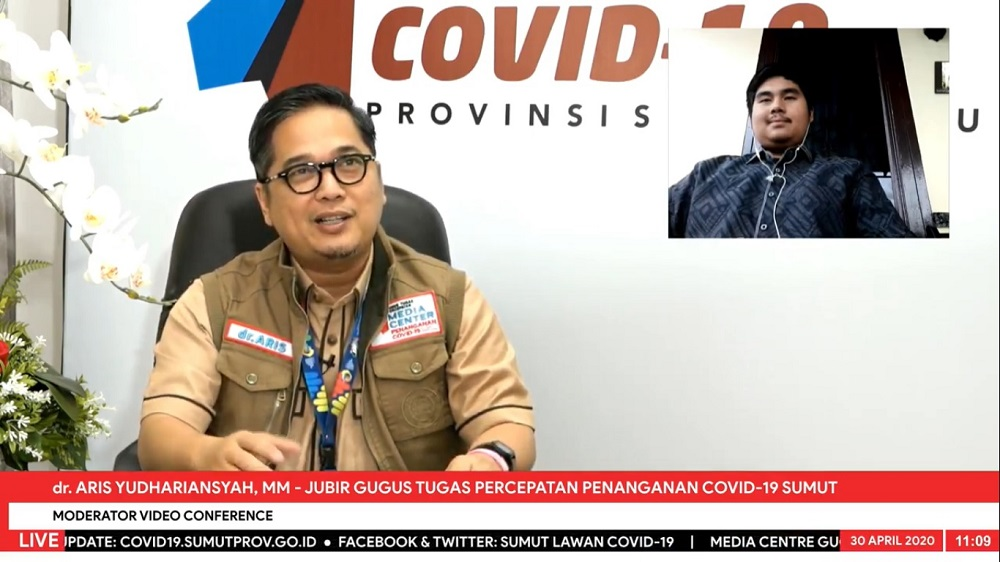

Pengalaman Anggota DPRD Sumut Sembuh Covid-19 Jujurlah dengan Kondisi Kesehatan

MEDAN Anggota DPRD Sumut, Muhammad Aulia Rizki Agsa merupakan satu di antara pasien positif Covid-19 tanpa gejala yang telah dinyatakan sembuh pada tanggal 4 April yang lalu. Dia sembuh setelah menjalani isolasi dan perawatan selama 21 hari di Rumah Sakit Umum Pusat Haji (RSUPH) Adam Malik Medan.
Berbagi kisah, Aulia menceritakan pengalaman dan hikmah yang ia peroleh selama menjalani perawatan, Kamis (30/4), melalui konferensi video secara live pada Media Center Gugus Tugas Percepatan Penanganan (GTPP) Covid-19 Provinsi Sumut, Kantor Gubsu Jalan Diponegoro Nomor 30 Medan. Dialog dipandu oleh Jubir GTPP Covid-19 Sumut, Aris Yudhariansyah.
“Salah satu hikmah paling penting yang saya ambil dan ingin bagikan kepada masyarakat Sumut ialah agar jujur dengan kondisi kesehatan masing-masing dan tidak takut untuk memeriksakan diri. Hal ini untuk mengurangi penyebaran virus corona, karena penularannya berlangsung cepat,” pesannya.
Dikatakannya, kalau dia tidak cepat berinisiatif dan mengisolasikan diri, karena penularan virus ini sangat cepat, bisa jadi keluarganya, tetangga dan rekan kerjanya juga dapat terpapar Covid-19 ini.
Aulia bercerita ia merasa tidak enak badan seperti masuk angin setelah melakukan kunjungan kerja dari luar provinsi. Setibanya di rumah, ia langsung mengisolasi diri di kamar dan beristirahat. Keesokan harinya, inisatif memeriksakan diri ke RSUPH Adam Malik.
“Saya feeling saja, seperti bukan masuk angin biasa. Walaupun tidak ada gejala yang berat, tapi karena riwayat perjalan saya juga banyak dari luar kota. Lebih baik saya periksakan langsung. Saya takut menjadi carrier dan menularkan ke orang banyak,” jelasnya.
Selama dirawat di RSUPH Adam Malik, Aulia menceritakan tenaga medis melakukan pelayanan dengan sangat baik. Selain melakukan perawatan dan pengobatan, tenaga medis juga senantiasa memberikan semangat, mengajak berbincang dan menghibur. “Jadi rasa takut dan cemas kita berkurang,” ucapnya.
Lebih lanjut, ia juga memberikan pujian kepada GTPP Covid-19 Sumut. Menurutnya, upaya yang dilakukan saat ini sudah bagus khususnya pengalokasian dana Rp1.5 triliun untuk penanganan Covid-19 dengan jumlah Rp500 M untuk termin pertama.
“Penanganan sudah baik tetapi saya ingin beri masukan, khususnya kepada Bapak Gubernur, agar pencegahan juga dilakukan. Isolasi wilayah seperti PSBB mungkin diperlukan karena memang penularan corona ini sangat cepat,” ungkapnya memberi saran.
Terakhir kepada masyarakat, Aulia pun berpesan agar kooperatif dengan protokol yang berlaku dan tidak membuat kerumunan, memeriksakan diri setelah melakukan riwayat perjalan atau kontak dengan orang positif Corona, jaga jarak, jaga kebersihan dan kesehatan.